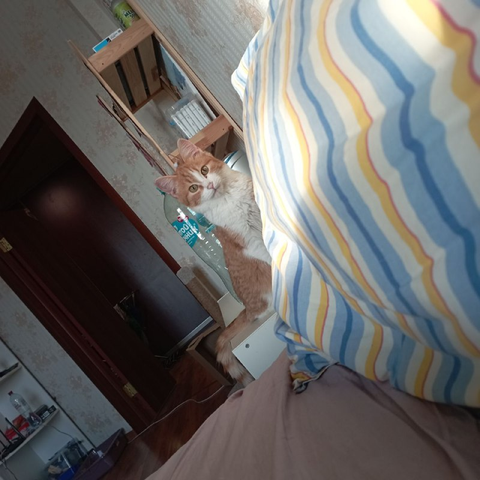
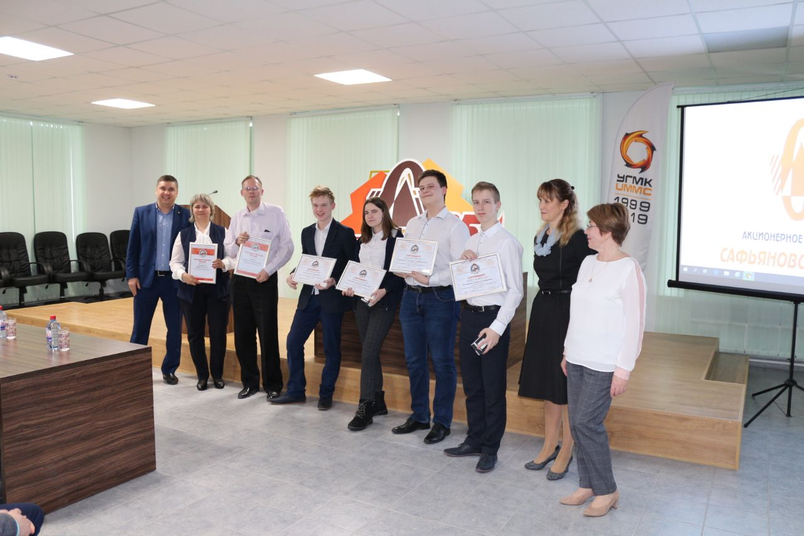

Надеюсь, когда-нибудь перестану болеть
Коротко и четко:
Родилась в городе Реж. Это за 90км от Екатеринбурга. Училась в школе №2. Школу окончила без троек. 10 лет занималась волейболом, но все кубки за первое место у нас забрала наша спорт.школа, поэтому доказательств достижений нет. После 9 класса переехала в Екатеринбург. Поступила в ЕКТС. 2 года жила в общежитии.
Сейчас живу на съемной квартире. Встаю рано утром, чтоб сесть в трамвай и 50 минут ехать в любимый колледж.
Недавно случилось пополнение в квартире, в виде этого прекрасного рыжего чуда :
В школе постоянно учавствовала в инженерных конкурсах. 4 года учавствовала в конкурсе "Инженериада УГМК", в котором разрабатывала реальные проекты для Сафьяновской меди, один из проектов внедрили на производство. Это был проект по буро-взрывным работам, в нем необходимо было расчитать необходимые параметры, чтоб перевести обрудование с одного карьера на другой. Всей нашей команде обещали денежное вознаграждение, и мы все еще с 2019г его ждем. Каждый год от этого конкурса ездила в лагерь "ТехноЛидер", в котором мы тоже разрабатывали проекты для реалных предприятий, я учавствовала в таких областях как биоинженерия, металлургия, энергетика и автоматизация.
